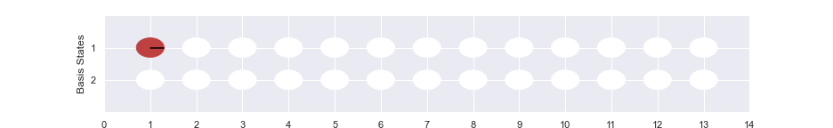
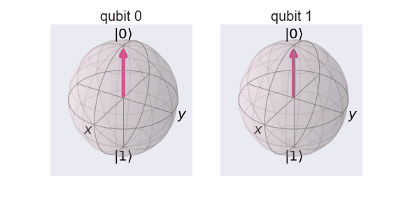
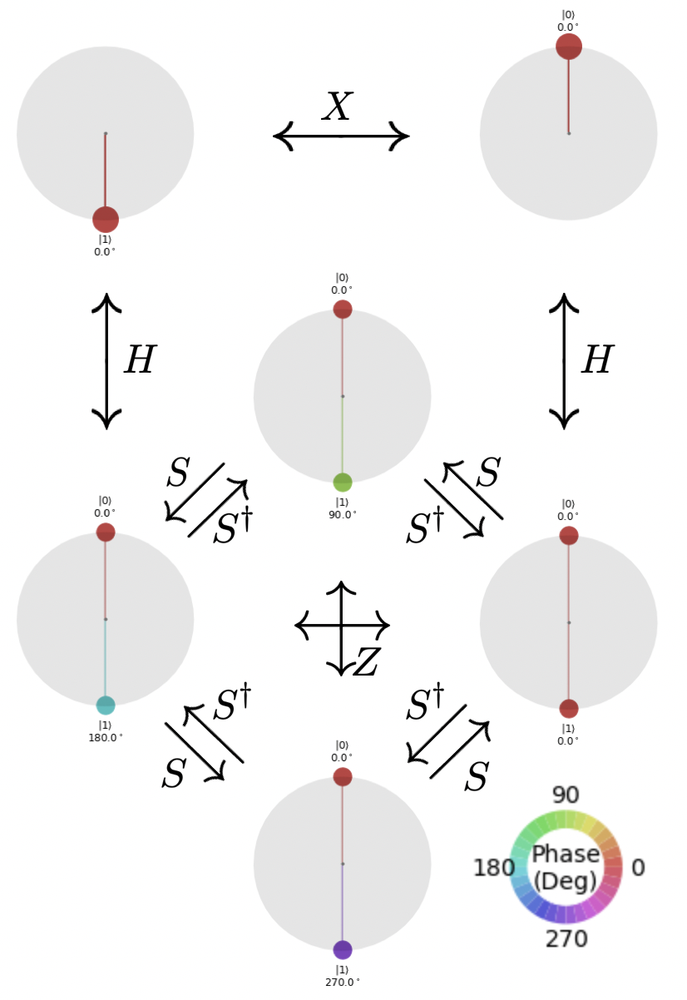

R-Phi Gate
R-phi Gate
The Rœï-gate performs a rotation of ùúô around the Z-axis. It has the matrix:
$$ R_\phi = \begin{bmatrix} 1 & 0 \\ 0 & e^{i\phi} \end{bmatrix}$$
%matplotlib inline
import numpy as np
import IPython
import matplotlib.pyplot as plt
from qiskit import QuantumCircuit
from qiskit.tools.jupyter import *
from qiskit.visualization import *
import seaborn as sns
sns.set()
from helper import *
import os
import glob
import moviepy.editor as mpy
R-Phi (1 qubit)
qc1 = QuantumCircuit(1)
qc1.rz(np.pi/4, 0)
style = {'backgroundcolor': 'lavender'}
qc1.draw(output='mpl', style = style)

getStateVector(qc1)
array([1.+0.j, 0.+0.j])
getBlochSphere(qc1)

R-phi (2 qubits)
qc2 = QuantumCircuit(2)
qc2.rz(np.pi/4, 0)
qc2.rz(np.pi/4, 1)
style = {'backgroundcolor': 'lavender'}
qc2.draw(output='mpl', style = style)
Fun Experiment (1 qubit)
qc_e1 = QuantumCircuit(1)
qc_e1.h(0)
qc_e1.barrier()
for i in range(10):
qc_e1.rz(np.pi/5, 0)
qc_e1.barrier()
qc_e1.h(0)
style = {'backgroundcolor': 'lavender'}
qc_e1.draw(output='mpl', style = style)

- Get Bloch

- Get Phase

Fun Experiment (2 qubits)
qc = QuantumCircuit(2)
qc.h(0)
qc.u3(np.pi/4,np.pi/4,0,1)
qc.barrier()
for i in range(8):
qc.rz(np.pi/4, 0)
qc.rz(np.pi/4, 1)
qc.barrier()
qc.h(0)
qc.u3(-np.pi/4,-np.pi/4,0,1)
style = {'backgroundcolor': 'lavender'}
qc.draw(output='mpl', style = style)

- Get Bloch

- Get Phase
Special R-phi Gates:
\( R_{\phi}\) gate is reprisented by \(S\) gate when \( \phi = \pi/2 \). It is also called \( \sqrt{Z} \) gate.
$$ S = \left( \begin{array}{cc} 1 & 0 \\ 0 & e^{\frac{i\pi}{2}} \end{array}\right), \quad S^\dagger = \left( \begin{array}{cc} 1 & 0 \\ 0 & e^{-\frac{i\pi}{2}} \end{array}\right) $$

\( R_{\phi} \) gate is reprisented by \( T \) gate when \( \phi = \pi/4 \).
$$T = \left( \begin{array} 1 & 0 \\ 0 & e^{\frac{i\pi}{4}} \end{array}\right), \quad T^\dagger = \left( \begin{array}{cc} 1 & 0 \\ 0 & e^{-\frac{i\pi}{4}} \end{array}\right)$$